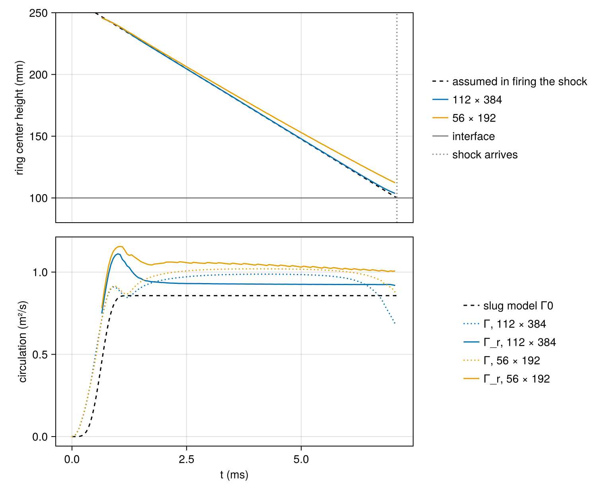
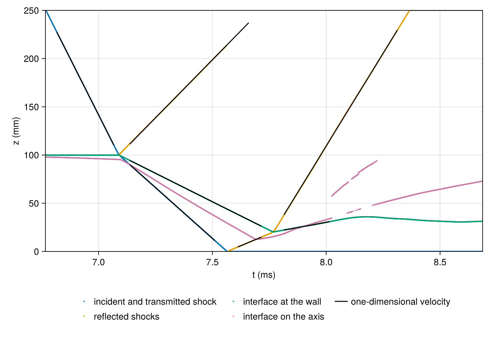
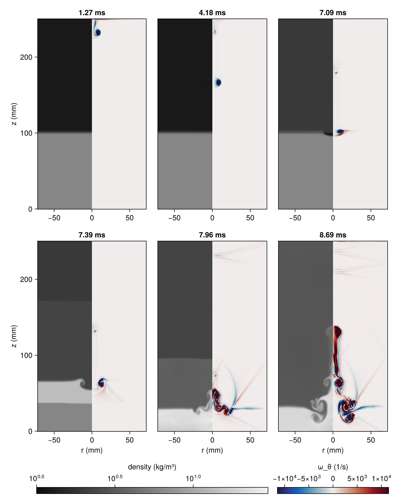

Vortex ring and shock
The figures on this page were computed on 2026-10-02 at commit 79be272, with Julia 1.11.4 on 8 ranks × 1 thread of a 12th Gen Intel(R) Core(TM) i9-12900K, on 112 × 384 and 56 × 192 nodes, in 8 min. They are reproduced by mpiexec -n 8 julia --project=docs -t 1 examples/vortex_ring_shock.jl.
This page is a demonstration, not a validation. It sets up a configuration from a vertical shock-tube experiment: a jet pulse through an injector in the top of the tube rolls up into a vortex ring, the ring travels 15 cm down to an interface between air and sulfur hexafluoride, and a shock of Mach number 1.36 is fired down the tube to reach the interface together with the ring. The injector is 1/2" in diameter, and the 5" square tube is represented by the round tube of the same cross-sectional area, so that the calculation is axisymmetric. The shock reflected from the end wall below the interface reshocks the layer.
No published measurement of this configuration is compared here. The page checks the parts of the calculation that have an independent reference: the waves at the interface against one-dimensional gas dynamics, the circulation of the ring against the vorticity the jet carries in, the speed of the ring against Kelvin's formula, the timing of the ring against that of the shock, and the mass of SF6 and the post-shock state through a change of boundary condition during the run.
One parameter differs from the experiment. Its jet runs at about 1.5 m/s, and the ring then takes about a quarter of a second to cross the 15 cm, some 3e5 steps of the calculation, whose step is set by the sound speed. The jet speed is therefore raised to 60 m/s, which shortens the transit by the same factor of 40. The consequences are measured below.
The script takes eight settings: nr and nz, the nodes across the radius of the tube and along it in the main run, which a second run halves; Mach, the Mach number of the shock; jet_speed, the peak speed of the jet in m/s; stroke, the length of the ejected slug in injector diameters; t_shock, the time at which the shock is fired, 0 for the time the run computes; t_after, the time the run continues after the shock reaches the interface; and smoke. With smoke=true the runs have 16 × 56 and 10 × 36 nodes, which checks that the page still runs; the figures come from the full run, launched on eight MPI ranks of one thread each.
using CompactLES # re-exports MPI
using CompactLES.Regions
MPI.Initialized() || MPI.Init(threadlevel=:funneled)
using CairoMakie
using Printf
CairoMakie.activate!(type = "png")
opt = CompactLES.script_args(ARGS,
(nr = 112, nz = 384, Mach = 1.36, jet_speed = 60.0, stroke = 3.0, t_shock = 0.0,
t_after = 1.6e-3, smoke = false); positional = (:nr, :nz))
grids = opt.smoke ? ((16, 56), (10, 36)) : ((opt.nr, opt.nz), (opt.nr ÷ 2, opt.nz ÷ 2))Gases and waves
Both gases start at 295 K and atmospheric pressure, the air above the interface and the SF6 below it. The shock travels down the tube, toward decreasing $z$, and heats the air to 363 K. IdealMixture holds each species at its room-temperature heat capacities; with the temperature-dependent heat capacities of Nasa9Mixture the wave speeds below change by at most 1 m/s.
Three Riemann problems, each solved by riemann_interface, give the waves of a plane interface, as on the page Reshocked mixing layer: the shocked air meets the SF6 at rest; the shock transmitted into the SF6 reflects from the end wall; and the reflected shock meets the interface. The first argument of riemann_interface is the gas at lower $z$.
eos = IdealMixture(["Air", "SF6"])
p0, T0 = 101_325.0, 295.0
air = Prim(Y = (1.0, 0.0), p = p0, T_ion = T0)
sf6 = Prim(Y = (0.0, 1.0), p = p0, T_ion = T0)
incident = shock_jump(eos, air, opt.Mach; dim = 3, direction = -1)
impact = riemann_interface(eos, sf6, incident.post; dim = 3)
shocked = impact.left
mirror = Prim(Y = shocked.Y, p = shocked.p, T_ion = shocked.T_ion,
u = (0.0, 0.0, -shocked.u[3]))
wall = riemann_interface(eos, mirror, shocked; dim = 3)
reshock = riemann_interface(eos, wall.right, impact.right; dim = 3)
W = abs(incident.shock_speed)
@printf("incident shock %.1f m/s; behind it %.1f m/s, %.1f kPa, %.1f K\n", W,
incident.velocity, incident.post.p / 1e3, incident.post.T_ion)
@printf("at the interface: transmitted shock %.1f m/s, reflected %s %.1f m/s, \
interface %.1f m/s\n", impact.left_speed, impact.right_wave,
impact.right_speed, impact.u_star)
@printf("from the end wall: reflected shock %.1f m/s\n", wall.right_speed)
@printf("at reshock: transmitted %s %.1f m/s, reflected %s %.1f m/s, interface %.1f m/s\n",
reshock.right_wave, reshock.right_speed, reshock.left_wave, reshock.left_speed,
reshock.u_star)Jet
The injector of diameter $D$ sits at the center of the top face. The jet speed rises and falls as $U \sin^2(\pi t / t_p)$ over a pulse of length $t_p$, whose mean speed is $U/2$, so the slug of air it ejects is $L = U t_p / 2$ long; stroke is $L/D$. Its default of 3 lies below the formation number of about 4, the stroke ratio beyond which a ring stops taking up the vorticity of the jet and leaves the rest behind it in a trailing jet, as summarized in the Wikipedia article on vortex rings.
The slug model estimates the circulation of the ring. Across the edge of the jet the axial velocity falls from $U(t)$ to zero, so the jet carries azimuthal vorticity $-\partial u_z/\partial r$ into the tube, and with it circulation at the rate $U(t)^2/2$, whatever the profile of the edge. Integrated over the pulse this is $\Gamma_0 = \tfrac{3}{16} U^2 t_p$, or $\tfrac98 U D$ for the default stroke. Without viscosity and before the shock, the circulation of each sign in the meridional plane changes only by what crosses the boundaries.
The Reynolds number $U D/\nu$ and the Mach number $U/c$ of the jet, at the experiment's speed and at the speed used here, take the viscosity of air at 295 K from the NASA transport fits of its constituents carried in the package (a CeaTransport of nitrogen, oxygen, argon and carbon dioxide in the mole fractions of air):
R = 0.127 / sqrt(π) # radius of the round tube of the 5" square's area, m
D = 0.0127 # injector diameter
gap = 0.15 # injector to interface
z_interface = 0.10 # SF6 below, down to the end wall
H = z_interface + gap # the injector sits in the top face
U = opt.jet_speed
t_pulse = 2 * opt.stroke * D / U
Gamma_slug = 3 / 16 * U^2 * t_pulse
gases = ("N2", "O2", "Ar", "CO2")
constituents = Nasa9Mixture(collect(gases))
X_air = (0.78084, 0.209476, 0.009365, 0.000319)
Y_air = mass_fractions(constituents, (gases .=> X_air ./ sum(X_air))...; basis = :mole)
state = thermodynamic_state(constituents, Prim(Y = Y_air, p = p0, T_ion = T0))
mu_air = transport_coefficients(CeaTransport(constituents), constituents, T0, state.rho,
state.cp, Y_air)[1]
nu_air = mu_air / state.rho
c_air = thermodynamic_state(eos, air).c
for (label, speed) in (("experiment", 1.5), ("here", U))
@printf("%-10s U = %5.1f m/s: Re = %6.0f, Mach %.4f, slug circulation %.2e m²/s\n",
label, speed, speed * D / nu_air, speed / c_air, 9 / 8 * speed * D)
end
@printf("pulse %.2f ms, stroke L/D = %.1f\n", 1e3t_pulse, opt.stroke)The faster jet raises the Reynolds number from 1200 to 5e4 and the Mach number from 0.004 to 0.17. The calculation carries no molecular viscosity, so neither value is represented: the grid and the artificial viscosity set the dissipation of the ring. A circulation 40 times larger also sets a velocity scale that is no longer small against the velocity the shock gives the interface, which is examined below.
Tube
The domain is the meridional half-plane $0 \le r \le R$, $0 \le z \le H$ of a CylindricalMetric, with the azimuthal dimension collapsed. An AxisBC closes $r = 0$, and the tube wall at $r = R$ and the end wall at $z = 0$ are SlipWallBCs, so the calculation has no boundary layers. Layers places the SF6 below $z$ = 0.10 m with a blend two cells thick.
The top face is a DirichletBC whose state is a function of position and time: air at rest with the jet's velocity profile over the injector, its edge spread over 0.5 mm by tanh_blend. At $t_s$ a Ramp changes this state to the gas behind the incident shock over the time the shock takes to cross three cells, so the shock enters already spread over about three cells. A Dirichlet face reflects the waves that reach it, and the shock reflected from the interface would come back down the tube. Ten cells after firing, the run therefore stops and continues with a phase change, setup(solver, Q; bcs), whose top face is an NSCBCInflowBC of the shocked air, through which waves traveling up the tube leave. As on the page Reshocked mixing layer, the target of the inflow switches to the gas behind each wave as it leaves: the shock reflected from the interface, then the shock transmitted at reshock, at the times of the one-dimensional solution.
The shock is fired so that it reaches the interface when the ring does. For that, the run assumes that the center of the ring leaves the injector plane at $0.4\,t_p$ and travels at 0.38 of the peak jet speed, two values measured for this stroke on an earlier calculation; both are measured again below.
ring_speed_ratio, ring_delay = 0.38, 0.4
arrival = ring_delay * t_pulse + gap / (ring_speed_ratio * U)
t_shock = opt.t_shock > 0 ? opt.t_shock : arrival - gap / W
t_impact = t_shock + gap / W
t_end = t_impact + opt.t_after
t_wall = t_impact + z_interface / abs(impact.left_speed)
z_meet = z_interface + impact.u_star * (t_wall - t_impact)
t_reshock = t_wall + z_meet / (wall.right_speed - impact.u_star)
z_reshock = wall.right_speed * (t_reshock - t_wall)
t_reflected_out = t_impact + gap / impact.right_speed
t_retransmitted_out = t_reshock + (H - z_reshock) / reshock.right_speed
@printf("shock fired at %.3f ms, reaches the interface at %.3f ms; end wall %.3f ms, \
reshock %.3f ms at z = %.1f mm; run ends at %.3f ms\n", 1e3t_shock,
1e3t_impact, 1e3t_wall, 1e3t_reshock, 1e3z_reshock, 1e3t_end)
pulse(t) = t <= 0 || t >= t_pulse ? 0.0 : sin(π * t / t_pulse)^2
jet(r, θ, z, t) = Prim(Y = (1.0, 0.0), p = p0, T_ion = T0,
u = (0.0, 0.0, -U * pulse(t) * (1 - tanh_blend(r, D / 2, 5e-4))))
fire = Ramp(eos, jet, incident.post; start = t_shock, duration = Cells(3), speed = W)
inflow_state(r, θ, z, t) = t < t_reflected_out ? incident.post :
t < t_retransmitted_out ? impact.right : reshock.right
faces(top) = ((AxisBC(), SlipWallBC()), PeriodicBC(), (SlipWallBC(), top))
problem = Problem(
name = "vortex ring and shock through an air/SF6 interface",
eos = eos,
metric = CylindricalMetric(),
domain = ((0.0, R), (0.0, 2π), (0.0, H)),
bcs = faces(DirichletBC(fire)),
ic = Layers(air, Slab(3, hi = z_interface) => sf6; width = Cells(2)),
)Run
The main run has 112 nodes across the radius and 384 along the tube, a spacing of 0.65 mm and 20 cells across the injector; the second run has 56 and 192. The numerics are the defaults. Every 50 µs each run records the azimuthal vorticity $\omega_\theta$ over the whole plane and the mass of SF6. From the moment the shock is fired, every fourth step, it records the pressure and the SF6 mole fraction on the tube wall and on the axis. At six times it keeps the density and the vorticity.
frame_times = [t_pulse, (t_pulse + t_impact) / 2, t_impact, t_impact + 0.3e-3,
t_reshock + 0.2e-3, t_end]
function weights(x)
w = fill(x[2] - x[1], length(x))
w[1] /= 2
w[end] /= 2
return w
end
function simulate(nr, nz)
solver, Q = setup(problem, Numerics(n_global = (nr, 1, nz)))
root = MPI.Comm_rank(solver.comm) == 0
ring = (t = Float64[], omega = Matrix{Float64}[], sf6 = Float64[])
coords = Ref{Any}(nothing)
frames = []
survey = Callback(EveryTime(50e-6), function (solver, Q)
rho, Y = field_array(solver, Q, :rho), field_array(solver, Q, :Y; species = 2)
mass = volume_integral(solver, rho .* Y)
snap = field_snapshot(solver, Q; fields = (:vorticity, :rho))
root || return nothing
coords[] = (snap.coords[1], snap.coords[3])
push!(ring.t, solver.t)
push!(ring.omega, snap[:vorticity][:, 1, :, 2])
push!(ring.sf6, mass)
nothing
end)
keep = Callback(AtTime(frame_times), function (solver, Q)
snap = field_snapshot(solver, Q; fields = (:vorticity, :rho))
root && push!(frames, (t = solver.t, rho = snap[:rho][:, 1, :],
omega = snap[:vorticity][:, 1, :, 2]))
nothing
end)
lines = (t = Float64[], wall_p = Vector{Float64}[], wall_X = Vector{Float64}[],
axis_p = Vector{Float64}[], axis_X = Vector{Float64}[])
record = Callback(EveryStep(4), function (solver, Q)
solver.t >= t_shock || return nothing
z, wp = line_sample(solver, Q, :p; dim = 3, index = (nr, 1))
_, wX = line_sample(solver, Q, :X; dim = 3, index = (nr, 1), species = 2)
_, ap = line_sample(solver, Q, :p; dim = 3, index = (1, 1))
_, aX = line_sample(solver, Q, :X; dim = 3, index = (1, 1), species = 2)
push!(lines.t, solver.t)
push!(lines.wall_p, wp); push!(lines.wall_X, wX)
push!(lines.axis_p, ap); push!(lines.axis_X, aX)
nothing
end)
t_open = t_shock + 10 * (H / (nz - 1)) / W
wall = @elapsed begin
run!(solver, Q; tfinal = t_end,
callback = (survey, record, keep, Callback(AtTime(t_open), Returns(true))))
steps = solver.step
solver, Q = setup(solver, Q; bcs = faces(NSCBCInflowBC(incident.post;
target = inflow_state)))
run!(solver, Q; tfinal = t_end, callback = (survey, record, keep))
end
root && @printf("%d × %d nodes, h = %.2f mm: phase change at %.4f ms after %d steps, \
%d steps in all, %.0f s\n", nr, nz, 1e3H / (nz - 1), 1e3t_open, steps,
solver.step, wall)
return (; nr, nz, h = H / (nz - 1), t_open, ring, coords = coords[], frames, lines)
end
runs = mpi_main() do
[simulate(g...) for g in grids]
end
fine, coarse = runsThe analysis and the figures below run on rank 0; the other ranks stop here.
MPI.Comm_rank(MPI.COMM_WORLD) == 0 || exit()Ring
The jet's vorticity is negative in this frame. For each record before the shock arrives, the ring is the set of nodes within $D$ of the most negative $\omega_\theta$ at which $\omega_\theta$ is negative, and its center is the centroid of $\omega_\theta$ over that set, at radius $R_r$ and height $z_r$. Circulations are given with the sign of the ring's, so positive: $\Gamma_r$ is that of the ring, and $\Gamma$ that of the whole plane. The radius $a$ of the core is that of a core of uniform vorticity with the same second moment about the center, $\langle \rho^2 \rangle = a^2/2$.
Kelvin's formula gives the speed of a ring whose core of uniform vorticity is thin, $a \ll R_r$,
\[U_K = \frac{\Gamma_r}{4\pi R_r}\left(\ln\frac{8R_r}{a} - \frac14\right),\]
as quoted in the Wikipedia article. The run compares it with the speed of the center over the middle of the transit, from 1 ms after the end of the pulse to 1.5 ms before the shock arrives, a straight line fitted to $z_r$, with $\Gamma_r$, $R_r$ and $a$ averaged over the same window.
function ring_track(run)
r, z = run.coords
wr, wz = weights(r), weights(z)
out = (t = Float64[], Gamma = Float64[], Gamma_ring = Float64[], Rr = Float64[],
zr = Float64[], core = Float64[], trailing = Float64[])
for (t, omega) in zip(run.ring.t, run.ring.omega)
t <= t_impact || break
cell = omega .* wr .* wz'
push!(out.t, t)
push!(out.Gamma, -sum(cell))
if t < t_pulse / 2
foreach(v -> push!(v, NaN),
(out.Gamma_ring, out.Rr, out.zr, out.core, out.trailing))
continue
end
_, I = findmin(omega)
near = [omega[i, k] < 0 && (r[i] - r[I[1]])^2 + (z[k] - z[I[2]])^2 < D^2
for i in eachindex(r), k in eachindex(z)]
G = sum(cell[near])
Rr = sum((r .* cell)[near]) / G
zr = sum((z' .* cell)[near]) / G
moment = sum((((r .- Rr) .^ 2 .+ (z' .- zr) .^ 2) .* cell)[near]) / G
push!(out.Gamma_ring, -G)
push!(out.Rr, Rr)
push!(out.zr, zr)
push!(out.core, sqrt(2moment))
push!(out.trailing, G - sum(min.(cell, 0)))
end
return out
end
function slope(t, x, window)
s = findall(k -> window[1] <= t[k] <= window[2] && isfinite(x[k]), eachindex(t))
length(s) < 3 && return NaN, NaN, NaN
a, b = t[s], x[s]
am, bm = sum(a) / length(a), sum(b) / length(b)
return sum((a .- am) .* (b .- bm)) / sum((a .- am) .^ 2), am, bm
end
tracks = [ring_track(run) for run in runs]
transit = (t_pulse + 1e-3, t_impact - 1.5e-3)
fits = map(zip(runs, tracks)) do (run, tr)
speed, tm, zm = slope(tr.t, tr.zr, transit)
s = findall(t -> transit[1] <= t <= transit[2], tr.t)
mean(v) = sum(v[s]) / length(s)
Gr, Rr, a = mean(tr.Gamma_ring), mean(tr.Rr), mean(tr.core)
kelvin = Gr / (4π * Rr) * (log(8Rr / a) - 1 / 4)
k = findfirst(>=(t_pulse), tr.t)
@printf("%3d × %3d: Γ = %.3f m²/s at the end of the pulse, %.2f Γ0; Γ_r = %.3f \
m²/s from %.1f to %.1f ms, %.3f m²/s when the shock arrives, with %.3f \
m²/s of negative vorticity behind it\n", run.nr, run.nz, tr.Gamma[k],
tr.Gamma[k] / Gamma_slug, Gr, 1e3transit[1], 1e3transit[2],
tr.Gamma_ring[end], tr.trailing[end])
@printf(" center at %.3f U = %.1f m/s, leaving the injector plane at \
%.2f t_p; Kelvin's speed %.1f m/s with R_r = %.1f mm, a = %.1f mm\n",
-speed / U, -speed, (tm + (H - zm) / speed) / t_pulse, kelvin, 1e3Rr, 1e3a)
@printf(" when the shock arrives the center is %.1f mm above the \
interface, at r = %.1f mm\n", 1e3 * (tr.zr[end] - z_interface),
1e3tr.Rr[end])
(; speed, tm, zm)
endThe circulation of the slug model, accumulated over the pulse:
slug(t) = U^2 / 2 * sum(pulse(s)^2 for s in range(0, t, length = 2001)) * t / 2001
colors = Makie.wong_colors()
fig = Figure(size = (760, 620))
ax1 = Axis(fig[1, 1], ylabel = "ring center height (mm)")
ax2 = Axis(fig[2, 1], xlabel = "t (ms)", ylabel = "circulation (m²/s)")
linkxaxes!(ax1, ax2)
hidexdecorations!(ax1, grid = false)
times = range(0, t_impact, length = 400)
model = @. H - ring_speed_ratio * U * (times - ring_delay * t_pulse)
lines!(ax1, 1e3times, 1e3model, color = :black, linestyle = :dash,
label = "assumed in firing the shock")
for (n, (run, tr)) in enumerate(zip(runs, tracks))
lines!(ax1, 1e3tr.t, 1e3tr.zr, color = colors[n], label = "$(run.nr) × $(run.nz)")
end
hlines!(ax1, [1e3z_interface], color = :gray, label = "interface")
vlines!(ax1, [1e3t_impact], color = :gray, linestyle = :dot, label = "shock arrives")
ylims!(ax1, 1e3z_interface - 20, 1e3H)
lines!(ax2, 1e3times, slug.(times), color = :black, linestyle = :dash,
label = "slug model Γ0")
for (n, (run, tr)) in enumerate(zip(runs, tracks))
lines!(ax2, 1e3tr.t, tr.Gamma, color = colors[n], linestyle = :dot,
label = "Γ, $(run.nr) × $(run.nz)")
lines!(ax2, 1e3tr.t, tr.Gamma_ring, color = colors[n],
label = "Γ_r, $(run.nr) × $(run.nz)")
end
Legend(fig[1, 2], ax1, framevisible = false)
Legend(fig[2, 2], ax2, framevisible = false)
On 112 × 384 nodes the center of the ring moves at 0.378 of the peak jet speed and its extrapolated track leaves the injector plane at $0.39\,t_p$, the values the firing time assumed, and the center is 3.7 mm above the interface when the shock arrives. On 56 × 192 nodes the ring moves at 0.354 of the jet speed and is 12 mm above the interface when the shock arrives: its speed depends on the resolution. Kelvin's formula with the measured circulation, radius and core gives the measured speed on both grids, to 0.1 m/s on the finer and 0.8 m/s on the coarser, although the core is not thin: $a/R_r$ is 0.5 on the finer grid and 0.75 on the coarser.
At the end of the pulse the circulation in the plane is 1.00 $\Gamma_0$ on the finer grid and 1.04 $\Gamma_0$ on the coarser. The ring's own circulation then settles at 0.93 m²/s, 1.08 $\Gamma_0$, and changes by about 1% between then and the shock's arrival. It exceeds the net circulation because the plane also holds positive vorticity, in a layer along the top face beside the injector and in a stem of vorticity of both signs that trails the ring. The stem grows during the transit, which the inviscid equations do not allow away from the boundaries, and it is smaller on the finer grid: it holds 0.15 m²/s of negative vorticity when the shock arrives on the finer grid and 0.41 m²/s on the coarser, where the ring's own circulation falls by 5% during the transit. From 6.3 ms the net circulation falls while the ring's does not: positive vorticity forms on the interface beneath the approaching ring (the flow images below show it at 7.09 ms).
The ring moves at 22.7 m/s, a fifth of the 118 m/s that the shock gives the interface. At the experiment's jet speed and the same speed ratio the ring would move at 0.6 m/s, under 1% of it.
Waves
Near the tube wall the shock crosses air the ring has not disturbed and meets a plane interface, so the waves there are those of one dimension. On the wall they are found as on the page Reshocked mixing layer: a shock is where the pressure crosses the middle of its one-dimensional jump, searched from the side the shock moves toward, and the interface is where the SF6 mole fraction crosses one half. A wave reflected from the interface is searched for on its own side of it. Each velocity is the slope of a straight line fitted to the positions over a window in which no other wave crosses the feature.
function crossing(x, v, level; from = :low)
i = from === :low ? findfirst(>(level), v) : findlast(>(level), v)
i === nothing && return NaN
j = from === :low ? i - 1 : i + 1
(j < 1 || j > length(v)) && return x[i]
return x[j] + (level - v[j]) / (v[i] - v[j]) * (x[i] - x[j])
end
midway(a, b) = (a + b) / 2
function wave_tracks(run)
z, L = run.coords[2], run.lines
interface = [crossing(z, X, 0.5; from = :high) for X in L.wall_X]
above(v) = [v[k] > interface[k] ? v[k] : NaN for k in eachindex(v)]
below(v) = [v[k] < interface[k] ? v[k] : NaN for k in eachindex(v)]
high(level) = [crossing(z, p, level; from = :high) for p in L.wall_p]
return (
incident = [crossing(z, p, midway(p0, incident.post.p)) for p in L.wall_p],
transmitted = [crossing(z, p, midway(p0, impact.p_star)) for p in L.wall_p],
reflected = above(high(midway(incident.post.p, impact.p_star))),
wall_reflected = below(high(midway(impact.p_star, wall.p_star))),
retransmitted = above(high(midway(impact.p_star, reshock.p_star))),
interface,
axis_interface = [crossing(z, X, 0.5; from = :high) for X in L.axis_X],
)
end
windows = [
("incident shock", :incident, (t_shock + 50e-6, t_impact - 20e-6),
incident.shock_speed),
("transmitted shock", :transmitted, (t_impact + 50e-6, t_wall - 50e-6),
impact.left_speed),
("reflected shock", :reflected, (t_impact + 50e-6, t_reflected_out - 50e-6),
impact.right_speed),
("interface", :interface, (t_impact + 50e-6, t_reshock - 50e-6), impact.u_star),
("shock from the end wall", :wall_reflected, (t_wall + 50e-6, t_reshock - 50e-6),
wall.right_speed),
("shock into the air at reshock", :retransmitted,
(t_reshock + 50e-6, min(t_end, t_retransmitted_out) - 50e-6), reshock.right_speed),
("interface after reshock", :interface, (t_reshock + 50e-6, t_reshock + 250e-6),
reshock.u_star),
]
waves = [wave_tracks(run) for run in runs]
@printf("%-30s %9s %9s %9s\n", "velocity (m/s)", ("$(r.nr) × $(r.nz)" for r in runs)...,
"1-D")
for (label, f, window, exact) in windows
measured = [slope(run.lines.t, getfield(w, f), window)[1]
for (run, w) in zip(runs, waves)]
@printf("%-30s %9.1f %9.1f %9.1f\n", label, measured..., exact)
end
fig = Figure(size = (760, 520))
ax = Axis(fig[1, 1], xlabel = "t (ms)", ylabel = "z (mm)")
w = waves[1]
L = fine.lines
labels = ((:incident, "incident and transmitted shock"), (:reflected, "reflected shocks"),
(:interface, "interface at the wall"), (:axis_interface, "interface on the axis"))
for (n, (f, label)) in enumerate(labels)
v = copy(getfield(w, f))
if f === :incident
v = [L.t[k] < t_impact ? w.incident[k] : w.transmitted[k] for k in eachindex(L.t)]
elseif f === :reflected
v = [L.t[k] < t_reshock ? (L.t[k] < t_wall ? w.reflected[k] : w.wall_reflected[k]) :
w.retransmitted[k] for k in eachindex(L.t)]
end
scatter!(ax, 1e3L.t, 1e3v, markersize = 3, color = colors[n], label = label)
end
for (label, f, window, exact) in windows
_, tm, zm = slope(L.t, getfield(w, f), window)
ends = [window[1], window[2]]
lines!(ax, 1e3ends, 1e3 .* (zm .+ exact .* (ends .- tm)), color = :black)
end
lines!(ax, [NaN], [NaN], color = :black, label = "one-dimensional velocity")
xlims!(ax, 1e3t_shock, 1e3t_end)
ylims!(ax, 0, 1e3H)
Legend(fig[2, 1], ax, orientation = :horizontal, nbanks = 2, framevisible = false)
On the wall each wave and the interface move at the one-dimensional velocity within 1%, except the shock reflected from the end wall and the interface after reshock, which differ by 1.7% and 1.6%; the two grids agree with each other within 1%. Over the 200 µs window the interface after reshock moves at 42.7 m/s against 43.4 m/s. It then slows and, near 8.2 ms, turns back toward the end wall.
On the axis the ring has pressed the interface 4.6 mm into the SF6 by the time the shock arrives, and the interface there then runs ahead of the interface at the wall, turning back at 7.69 ms against 7.77 ms at the wall. After reshock the SF6 on the axis rises far faster than the plane interface, and from 8.0 ms the mole fraction on the axis crosses one half at several heights, which the figure shows as a second branch.
Flow
Each panel shows the density on the left of the axis and the azimuthal vorticity on the right, over the whole tube, at the end of the pulse, halfway through the transit, when the shock reaches the interface, 0.3 ms later, 0.2 ms after reshock and at the end of the run.
r, z = fine.coords
rho_range = (1.0, 30.0)
omega_scale = 0.25maximum(maximum(abs.(f.omega)) for f in fine.frames[1:2])
fig = Figure(size = (760, 960))
for (n, frame) in enumerate(fine.frames)
row, col = fldmod1(n, 3)
panel = Axis(fig[row, col], aspect = DataAspect(),
title = @sprintf("%.2f ms", 1e3frame.t),
xlabel = row == 2 ? "r (mm)" : "", ylabel = col == 1 ? "z (mm)" : "")
heatmap!(panel, -1e3 .* reverse(r), 1e3z, reverse(frame.rho, dims = 1),
colormap = :grays, colorscale = log10, colorrange = rho_range)
heatmap!(panel, 1e3r, 1e3z, frame.omega, colormap = :balance,
colorrange = (-omega_scale, omega_scale))
col == 1 || hideydecorations!(panel, grid = false)
end
Colorbar(fig[3, 1:2], limits = rho_range, colormap = :grays, scale = log10,
vertical = false, label = "density (kg/m³)")
Colorbar(fig[3, 3], limits = (-omega_scale, omega_scale), colormap = :balance,
vertical = false, label = "ω_θ (1/s)")
At 1.27 ms the ring has rolled up just below the injector, with a layer of positive vorticity along the top face beside it, where the face holds the radial velocity at zero. At 4.18 ms the ring is a compact core with a faint stem behind it. At 7.09 ms the shock has reached the interface; the ring has pressed a dimple of air into the SF6 near the axis, and positive vorticity lines the interface beneath the ring.
At 7.39 ms the transmitted shock is in the SF6 and the reflected shock in the air above, at 170 mm. The ring has followed the interface down and sits at its edge, and the interface has rolled up around it. At 7.96 ms, 0.2 ms after reshock, the vorticity on the interface is positive and much stronger than the ring's: reshock, which travels from the SF6 into the air, deposits vorticity of the opposite sign to the first shock's, and the dimple inverts into a column of SF6 that rises along the axis. At the end of the run the SF6 on the axis reaches 139 mm, with a mole fraction above one half up to 73 mm, while the interface at the wall is at 31 mm.
The run ends 1.6 ms after the shock reaches the interface, 0.3 ms after the shock transmitted at reshock reaches the top face. Behind that shock the air moves up at 43 m/s, out through the top face, which an inflow condition does not represent.
Conservation and the phase change
No SF6 crosses a boundary, so its mass is constant. The phase change keeps the state and replaces only the condition on the top face. Had the inflow condition not held the state the Dirichlet face left, the change would have sent a wave down the shocked air. Between the phase change and the shock's arrival at the interface, the run compares the pressure on the wall with the pressure behind the incident shock, on the face and everywhere more than 15 cells above the shock.
for (run, w) in zip(runs, waves)
m = run.ring.sf6
@printf("%3d × %3d: SF6 mass departs from its initial value by at most %.1e, \
%.1e at the end\n", run.nr, run.nz, maximum(abs.(m .- m[1])) / m[1],
abs(m[end] - m[1]) / m[1])
heights = run.coords[2]
face, clear = 0.0, 0.0
for (t, p, front) in zip(run.lines.t, run.lines.wall_p, w.incident)
run.t_open < t < t_impact || continue
face = max(face, abs(p[end] - incident.post.p))
above = heights .> front + 15run.h
any(above) && (clear = max(clear, maximum(abs.(p[above] .- incident.post.p))))
end
jump = incident.post.p - p0
@printf(" after the phase change the pressure departs from that behind \
the shock by at most %.1e of the jump on the face and %.1e above the \
shock\n", face / jump, clear / jump)
endThe mass of SF6 departs from its initial value by at most 5.5e-4 on the finer grid and 2.9e-3 on the coarser, while the transmitted shock reflects from the end wall, and returns to within 2.8e-5 and 1.2e-4 by the end of the run. After the phase change the pressure on the face and above the shock departs from the post-shock pressure by at most 0.4% of the jump on both grids, so the change of condition sends no larger wave down the tube.
What this checks
- Near the tube wall the incident, transmitted and reflected shocks and the interface move at the velocities of the one-dimensional Riemann solutions to within 1.7% on both grids, through reshock.
- On 112 × 384 nodes the ring moves at 0.378 of the peak jet speed and its track starts at $0.39\,t_p$, the values used to time the shock, so the ring is 3.7 mm above the interface when the shock arrives. On 56 × 192 nodes the ring is 6% slower and 12 mm higher.
- Kelvin's formula, with the circulation, radius and core size measured in the calculation, gives the ring's speed within 4% on both grids.
- The circulation of the plane at the end of the pulse is that of the slug model within 4%; the ring holds 1.08 $\Gamma_0$ on the finer grid and keeps it within about 1% until the shock arrives.
- The SF6 mass is conserved within 5.5e-4, and the change from the Dirichlet face to the characteristic inflow disturbs the post-shock pressure by at most 0.4% of the jump.
This page was generated using Literate.jl.